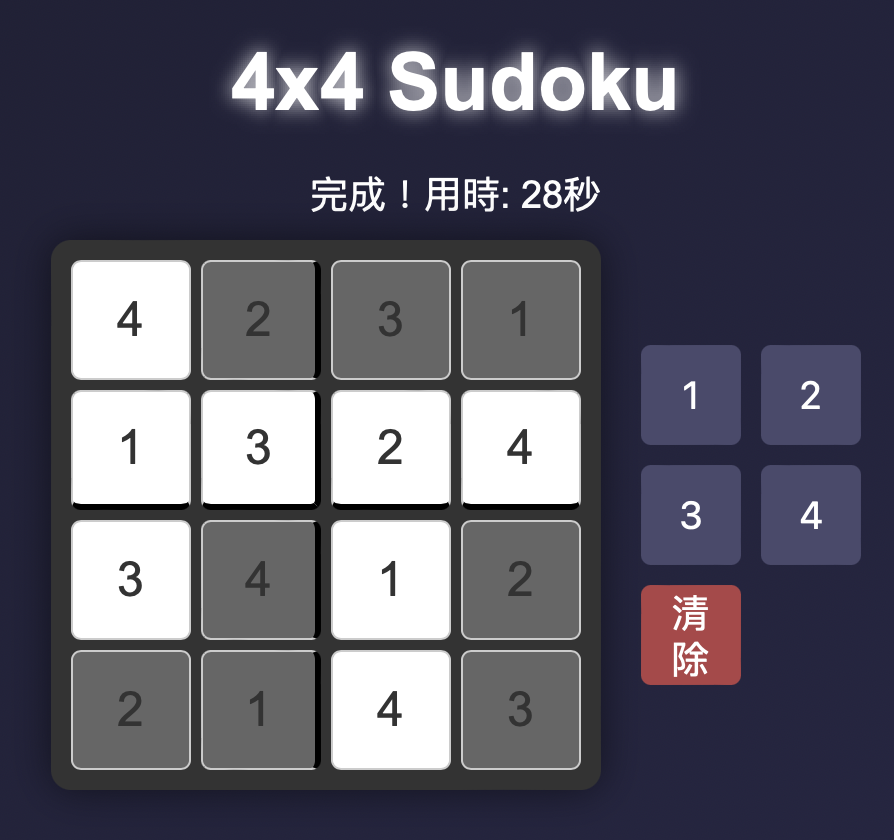

教學互動工具
提供多種互動式教學工具，幫助教師提升課堂參與度，激發學生學習興趣。
年級題庫
針對不同年級的練習題庫，涵蓋多學科內容，幫助學生鞏固知識。
學科練習
提供各學科的專項練習，幫助學生針對性提升學術能力。

美術設計工具
提供創意設計工具，幫助學生和教師創作美術作品或設計項目。

其他實用工具
涵蓋多種實用工具，滿足教學和學習中的各種需求。
提供多種互動式教學工具，幫助教師提升課堂參與度，激發學生學習興趣。
針對不同年級的練習題庫，涵蓋多學科內容，幫助學生鞏固知識。
提供各學科的專項練習，幫助學生針對性提升學術能力。
提供創意設計工具，幫助學生和教師創作美術作品或設計項目。
涵蓋多種實用工具，滿足教學和學習中的各種需求。